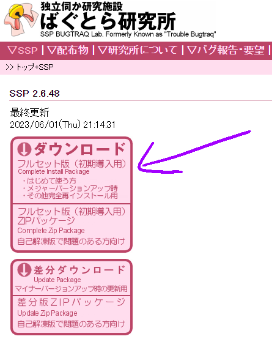

What are ukagaka?
Ukagaka, also known as ghosts, are a kind of desktop toy that originates from Japan! They're extremely customizable, but they typically take the form of a character or pair of characters on your desktop that interacts with you, and talks now and then. But truly, I believe that ukagaka is a medium for creating art with. They can be a simple companion, a useful tool that performs functions like checking the weather or saving a todo list, an aesthetic add-on, or they can convey a story. The sky is really the limit!
If I had to describe them in just a few words, I'd call them "desktop friends". "Friends" isn't always the right term, because not all ghosts are friendly, but it conveys the general idea. Try scrolling through my ghost index to get an idea of what sort of variety there is!
Ukagaka have a long history; they date back to approximately the year 2000. You may be familiar with old Japanese ukagaka, like Mayura and Mikage Sakura. I don't have much knowledge about these ghosts, as I don't speak Japanese, and they aren't really my particular niche. I primarly focus on the development of new ghosts, and of ukagaka as a medium!
Ukagaka (伺か) is the current name, but they have undergone some name changes throughout their history. Nanika (何か) is another term that used to be used. You may also see them referred to as Nin'i-tan (任意たん) and Nise-Haruna (偽春菜) in some circles, but these names refer to the default ghost of the baseware Materia and to the very first ghost that was ever created, respectively.
Back to top
How to install ukagaka
Getting yourself set up with ukagaka isn't terribly difficult! First of all, you will need to download a baseware, which is the program that ukagaka run on. You can think of it a bit like the baseware is a game console, and each ghost is a game that you put into it.
SSP is the most popular baseware, and at the time of writing it's the only one that's really up to date. There are other options, but they're generally old and missing a lot of features that SSP has added. For this reason, SSP is considered the standard in both the English and Japanese communities. Everything I talk about on this website is with SSP in mind; if you use other baseware I won't be able to help you with the details of those.
If you want to try other baseware, please check out my resources page for a list with links! You're pretty much on your own with figuring them out, but if you find out how to work them please do share!
Installing SSP
First of all, you'll want to download SSP from http://ssp.shillest.net/. This is the official website for SSP, and always where you want to get it from. On the left, you'll see a big pink button that says "Complete install package" in small text. Click the top section of that button to download an exe installer! (You can click the bottom section to download a zip file if you prefer.)

Download this file and move it to where you'd like SSP to be installed. DO NOT LEAVE IT IN YOUR DOWNLOADS FOLDER. This will cause you pain and suffering later down the line. You need to make it its own dedicated folder somewhere; on your desktop, in your documents, in some other folder, wherever. Just make sure that it's not in a protected folder. And make sure the folder has a name that only uses basic alphanumeric characters, no spaces! I'd just call it "SSP". I mention all of these things because I have helped several people debug issues with SSP not running for them, and things like this were frequently the cause.
Now that you've found a good place, run that exe installer, and follow the installation process. It should install SSP into the folder. SSP doesn't install any files outside of the folder you specify, so if you ever want to uninstall SSP, you can just delete the folder!
Once the installation is done, go ahead and double click on ssp.exe, which should have a bow and bell icon. You should see a catgirl named Emily appear, and she'll talk to you in Japanese. She'll also pop up the SSP preferences window, which you can use to set your name, nickname, and birthday if desired. This window is important because some ghosts will pull your user information from here automatically! It can be used for some really interesting storytelling.
SSP should be in English automatically, but if not, you can right click on Emily, go to the Language tab (it's the 4th up from the bottom), and choose English. SSP should now change languages immediately without requiring a restart! NOTE: this ONLY changes the language of SSP's menus. In order for a ghost to talk in another language, the ghost's developer would have to rewrite all of their dialogue in that language. This is a monumental task, and not reasonable to ask of most devs! Even many devs who speak more than one language only write their ghosts in one.
Installing ghosts
Now that you have SSP, you'll probably want some other ghosts! I recommend starting with SSP Angel. They're a fun duo that will tell you all about SSP and ghosts, and can help you by explaining various features and settings in SSP, some basic troubleshooting, a glossary, and more! And besides that, they've got plenty of silly dialogue to keep you entertained even after you're an SSP master.
To install them, first you need to download their .nar file from their page. Most ghosts and ghost related things are installed as .nar files! In the case of my ghosts, they're either distributed on Mediafire, or through GitHub releases. With GitHub releases, go to the "Assets" section, and click on the .nar file there to download it. You can ignore the ones that say "Source code".
Once you've downloaded the .nar file, simply drag and drop it on Emily to install it! Once she's finished, you can right click her, go to "Change ghost", and click on SSP Angel. They'll take it from there!
This basic process is the same for most ghosts you will download. You download a .nar file (or occasionally a .zip file), and drag it onto an open ghost to install it. But sometimes, SSP will have trouble with installing files. If that's the case, you can still install the ghost manually! Simply rename the .nar file to have a .zip extension, unzip it, and place the ghost into your ssp/ghost/ folder. You'll need to close and reopen SSP, or otherwise refresh your ghost list, for the ghost to show up. But so long as you placed it correctly and it's not nested in an additional subfolder or anything, it should show up.
If you puck up some really old English ghosts, you may also encounter ghosts that are distributed as a bundle with SSP. Because these versions of SSP are so old, I recommend copying the files for that specific ghost out of them to a modern installation of SSP. The reason is that the automatic updater on older versions of SSP is now unfortunately broken. Unzip the file, go into the ssp/ghost/ folder, and copy and paste the ghost's folder into your new installation of SSP, as discussed above.
And that's it! If you're looking for ghosts to download, try browsing my ghost index, or try browsing the ghost list at the Ukagaka Dream Team Wiki. For Japanese ghosts, you might try GHOST TOWN, or Ghost Captor Sakura, but be aware that you may encounter mature themes on these sites and browse with caution!
Back to top
How to make your own ukagaka
Making your own ukagaka can be really fun! There are more English resources than ever, and more upcoming! I would recommend starting out small with your first ghost, to get a feel for it and see what all goes into it. But it's really not that bad once you learn what you do and don't need! We've run multiple successful ghost jams, where people have made ghosts in just a week, 3 days, or even as little as a few hours! It's easier with teammates—and once you already know how to do it, admittedly—but that can be you too!
You don't need anything fancy to make ghosts with. I just use my favorite art program, and Notepad++. It's just simple editing of text files, and a willingness to learn. My current recommendations are my Simplicity Template, to give you a small base to work from, and the SHIORI Events page and SakuraScript page of Ukadoc. These pages will take you far! You can also join the Ukagaka Dream Team's Discord server, where you can ask questions and get advice.
There is also Zarla's walkthrough that will walk you through the entire process of making a ghost, but be aware that it paints ghost making as a much larger task than it has to be. It has worked for a lot of people! It's how I got my start. But it's a huge template and you shouldn't be afraid to cut content from it if it doesn't fit the vision of your ghost. Much of what you learn in that walkthrough can also be applied to the Simplicity template, if you want to try it on a smaller base!
Back to top
Who am I?
Hi! I'm Zichqec, but I just go by Zi. I've been using ukagaka since 2016, and I dabbled with making them back then, but I didn't get deep into development until 2020. Since then I've been an avid ukagaka developer, and I've produced most of the things you can find on this website! (Not all by myself! There are also collaborations listed here, with clear indication of who I collabed with. There are also things like shells that folks have made for my ghosts, but these are clearly marked as such.)
I am a self-taught artist, writer, and programmer. So you can see why ukagaka dev, which makes good use of all three of these skillsets, called to me! I love this medium, I love making these things, and I've learned so much over the last few years as I've made more and more and explored new ideas.
As of June 1st, 2021, I am also the administrator of the Ukagaka Dream Team, and I run our official resources with the help of my lovely moderation team.
You may see me pop up in other places too, reporting bugs or helping to fix English translations. I do a bit of everything, really!
And that's all you need to know about me! Come talk with me sometime about ghosts, whether it's questions or just chatting about them in general. I love to talk about this stuff!
Back to top